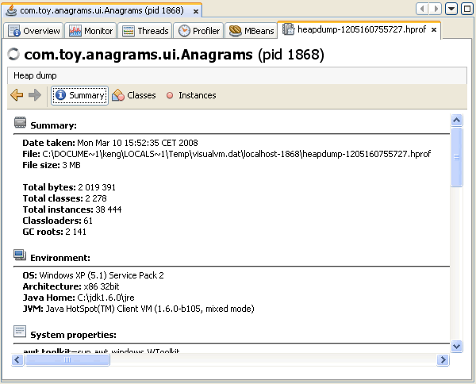
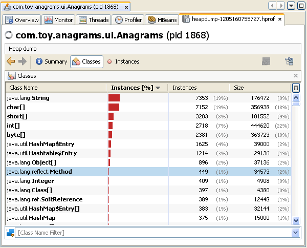
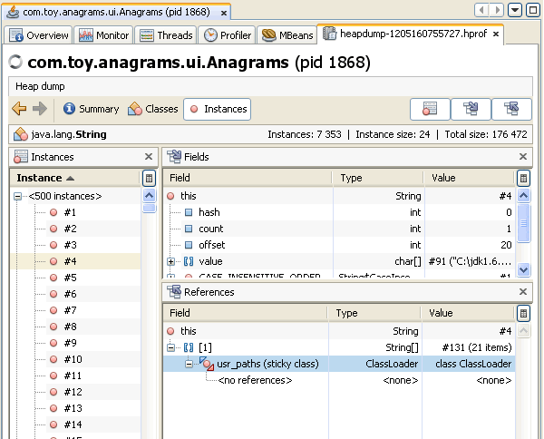

С помощью VisualVM (средства VisualVM) можно просматривать содержимое файла снимка кучи и быстро видеть выделенные объекты в куче. Снимки кучи отображаются на вложенной вкладке снимка кучи в главном окне. Можно открывать файлы снимков кучи в двоичном формате (.hprof), сохранённые на локальном компьютере, или снимать снимки кучи выполняющихся приложений средствами VisualVM.
Heap Dump (снимок кучи) — это снимок всех объектов в куче JVM (Java Virtual Machine, виртуальная машина Java) в определённый момент времени. Программное обеспечение JVM выделяет память для объектов из кучи для всех экземпляров классов и массивов. Сборщик мусора освобождает память кучи, когда объект больше не нужен и на него нет ссылок. Исследуя кучу, можно найти, где создаются объекты, и найти ссылки на эти объекты в исходном коде. Если программное обеспечение JVM не удаляет ненужные объекты из кучи, VisualVM поможет найти ближайший корень сборки мусора для объекта.
Если файл снимка кучи сохранён на локальном компьютере, его можно открыть в VisualVM командой File (Файл) > Load (загрузить) в главном меню. VisualVM может открывать снимки кучи, сохранённые в формате файла .hprof. Когда вы открываете сохранённый снимок кучи, он открывается как вкладка в главном окне.
С помощью VisualVM можно снять снимок кучи локального выполняющегося приложения. Когда снимок кучи снимается средствами VisualVM, файл остаётся временным, пока вы явно его не сохраните. Если файл не сохранить, он будет удалён при завершении приложения.
Снимок кучи можно снять одним из следующих способов:
Снимки кучи локального приложения открываются как вложенные вкладки на вкладке приложения. Снимок кучи также появляется как узел снимка кучи с меткой времени под узлом приложения в окне Applications. Чтобы сохранить снимок кучи на локальный компьютер, щёлкните правой кнопкой снимок кучи в окне Applications и выберите Save As (сохранить как).
VisualVM позволяет наглядно просматривать снимки кучи в следующих представлениях:
Когда вы открываете снимок кучи, VisualVM по умолчанию показывает представление Summary (сводка). Представление Summary показывает среду выполнения, в которой был снят снимок кучи, и другие свойства системы.

Представление Classes (классы) показывает список классов, а также число и процент экземпляров, на которые ссылается этот класс. Список экземпляров конкретного класса можно увидеть, щёлкнув имя правой кнопкой и выбрав Show in Instances View (показать в представлении Instances).
Сортировку отображения результатов можно изменить, щёлкнув заголовок столбца. Фильтром под списком можно отфильтровать классы по имени или ограничить отображаемые результаты подклассами класса, щёлкнув имя класса правой кнопкой и выбрав Show Only Subclasses (показывать только подклассы).

Представление Instances (экземпляры) показывает экземпляры объектов выбранного класса. Когда вы выбираете экземпляр на панели Instance, VisualVM показывает поля этого класса и ссылки на этот класс на соответствующих панелях. На панели References можно щёлкнуть элемент правой кнопкой и выбрать Show Nearest GC Root (показать ближайший корень GC), чтобы отобразить ближайший корневой объект GC (Garbage Collection, сборка мусора).
